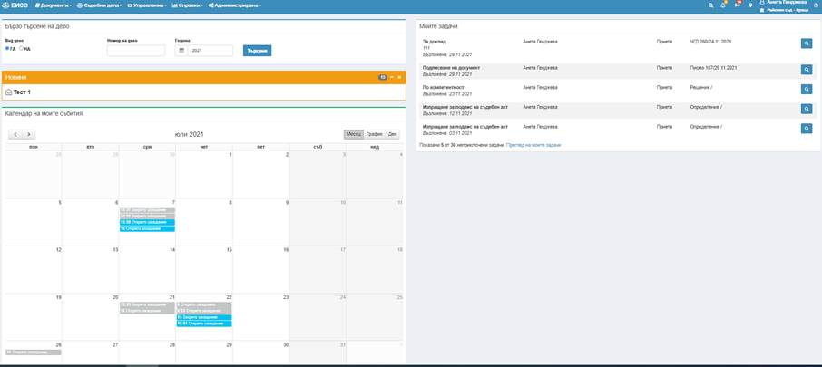
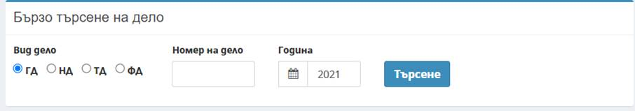
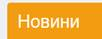
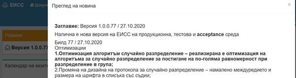
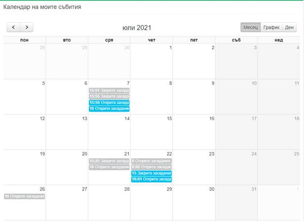
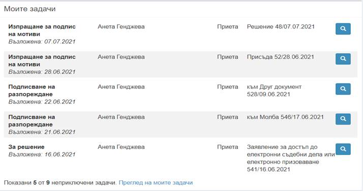
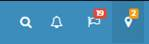

След успешен вход, в системата се визуализира Персонализиран екран на потребителя спрямо ролята и правата му за достъп.

Бърз достъп до този Персонализиран екран се осъществява от всеки друг екран в системата чрез клик върху името на системата „ЕИСС“ в левия край на лентата с меню и инструменти.
- Панел Бързо търсене на дело:

Чрез този панел има опция за бързо търсене по вид дело (гражданско, наказателно, търговско и фирмено дело, в зависимост от вида на съда), номер на дело (като може да се въведе само краткия номер на делото), година.
· Панел Новини:
В панел Новини се визуализират непрочетените от потребителя новини. Заглавието на панела

представлява хиперлинк към списъчен екран с всички новини публикувани в ЕИСС. Заглавието на новината представлява хиперлинк към пълното съдържание на новината, което се отваря в нов подпрозорец:

· Панел Календар на моите събития:

В Календара се визуализират проведените съдебни заседания (оцветени в сив цвят) и насрочените съдебни заседания (оцветени в син цвят), за дела, до които има достъп потребителя.
· Панел Моите задачи:
·

Моите задачи съдържат информация за последните насочени задачи за изпълнение от потребител.
· Панел Дела към мен:
Дела към мен са делата, насочени към потребител чрез Местоположение на дело.
Лента с меню и инструменти

- разширено търсене, известия, задачи,